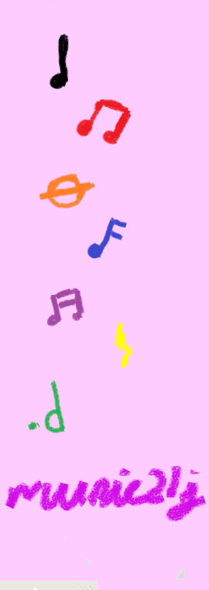

Staff and Duration rendering with Metronome Demo
Please select a staff to display
Treble Clef
Bass Clef
Grand Staff
30
0
Requires MIDI keyboard and Jazz Plugin to work.
select MIDI source
MIDI Input: